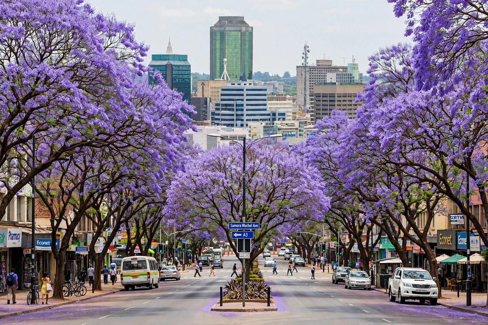

| Harare | |
|---|---|
 Central Harare, formerly Salisbury | |
| Country | Zimbabwe |
| Founded | 12 September 1890 (as Fort Salisbury) |
| Elevation | 1,483 m (4,865 ft) |
| Population | ~1.5 million (city); ~2.4 million (metropolitan) |
| Former name | Salisbury (1890–1982) |
| Nickname | "Sunshine City" |
Harare is the capital and largest city of Zimbabwe. Situated in the north-east of the country, in the heart of historically Shona territory at an elevation of about 1,483 metres, it is Zimbabwe's political, commercial and communications centre. Founded by British South Africa Company settlers in 1890 as Salisbury, it was renamed Harare in 1982, two years after Zimbabwean independence.
The site was occupied on 12 September 1890 by the Pioneer Column of Cecil Rhodes's British South Africa Company, which established Fort Salisbury, named after the British prime minister, the Marquess of Salisbury. The township grew with the railway's arrival and with tobacco farming in the surrounding Mashonaland plateau. Salisbury became capital of the self-governing colony of Southern Rhodesia in 1923 and of the Federation of Rhodesia and Nyasaland (1953–1963).
After Rhodesia's Unilateral Declaration of Independence in 1965, the city remained the seat of Ian Smith's government through the liberation war of the 1970s. At independence on 18 April 1980, Robert Mugabe became prime minister with his government in Salisbury; on the second anniversary of independence in 1982 the city was renamed Harare, after the Shona chief Neharawa — "Harare" is also said to derive from the Shona phrase haarari, "one who does not sleep". Commuter towns such as Chitungwiza and Epworth expanded rapidly after 1980.
Harare sits on the highveld plateau, giving it a mild subtropical highland climate: warm, rainy summers (November–April) and cool, dry winters with abundant sunshine, which earned it the nickname "Sunshine City". The city is noted for its broad avenues lined with jacaranda and flamboyant trees. The Kopje, a granite hill near the centre, offers views over the city, and the Mukuvisi Woodlands and National Botanic Gardens preserve indigenous msasa woodland.
Harare is Zimbabwe's chief manufacturing and financial centre, historically anchored by tobacco auctions — once among the world's largest — as well as gold marketing, textiles, steel and food processing. Economic crisis in the 2000s, including the 2005 Operation Murambatsvina demolitions, badly damaged the informal economy and infrastructure, and periodic cholera outbreaks and water shortages exposed failing services; nevertheless the city remains the country's hub for government, universities and media. Institutions include the University of Zimbabwe (founded 1952), the National Gallery — known for its Stone Age-to-modern collection and Shona stone sculpture — and the Harare International Festival of the Arts (HIFA). Football club Dynamos, "DeMbare", is based at Rufaro Stadium in Mbare, the city's oldest township.